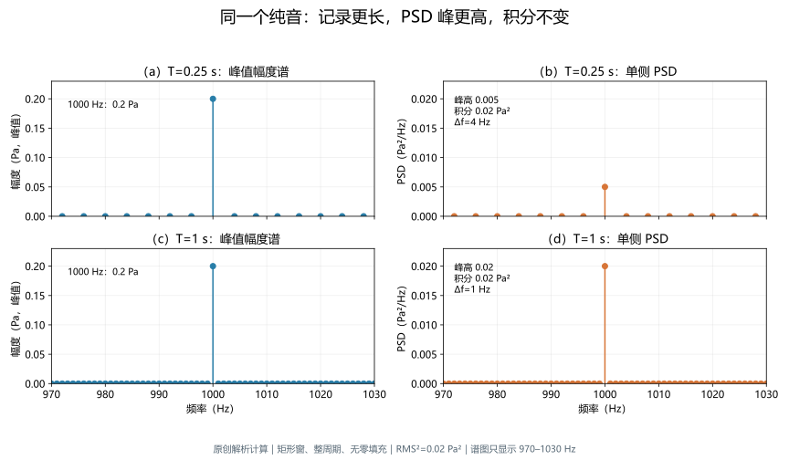
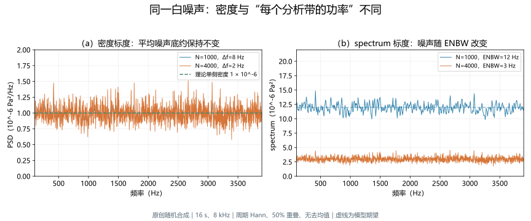
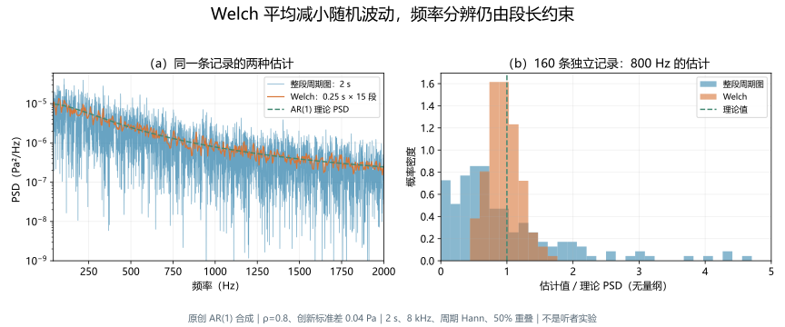
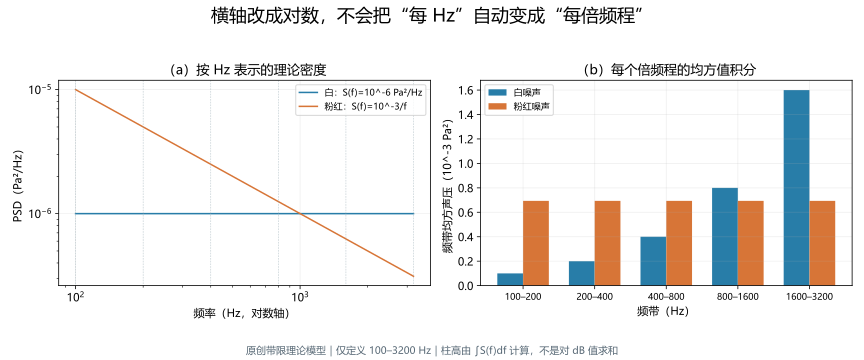

频谱与功率谱密度
深度词条 · 本地预览 · 2026-10-10 · Draft，尚未完成专业审阅
频谱（spectrum）是按频率组织信号的一类表征；它可以保留复数幅度与相位，也可以只显示幅度、平方幅度或经过归一化的功率。功率谱密度（power spectral density，PSD）描述单位频率宽度上的平均均方贡献，适合比较噪声分布、计算频带总量和分析随机过程。若输入是声压，PSD 的单位为 Pa²/Hz；若输入是麦克风电压或数字幅度，单位随输入改变。1216
“频谱图上这个峰有多高”并不是一个完整的测量问题。需要说明纵轴代表什么、单位是什么、记录和窗有多长、是否将负频率折入正频率，以及怎样平均。相同声音可以产生高度不同而总均方值相同的 PSD 峰；同一白噪声在不同分析带宽下，其功率谱噪声底也会改变。56
纯音与复合音说明信号由哪些分量组成，本词条解释怎样给这些分量和噪声赋予可比较的数值。语谱图把局部频谱随时间排列；听觉滤波器则涉及听觉系统怎样选择和整合频率信息。计算出来的频谱与听者可用的表征需要分别讨论。
先明确“谱”表示的对象
复频谱、幅度谱与相位谱
对一段记录计算傅里叶变换，得到的通常是复数。模表示频率分量的大小，角度表示相位；把模画出来得到幅度谱，把角度画出来得到相位谱。快速傅里叶变换（FFT）是计算离散傅里叶变换（DFT）的一类算法，算法快慢本身不规定结果的物理单位。2
相位不是纵轴旁的装饰。相同幅度谱可以对应不同的时域波形、峰值及起伏；时间平移也能改变相位而保持幅度谱。只保留幅度或 PSD，通常无法唯一恢复原波形。对几乎没有幅度的频率点，相位还容易受噪声支配，不能把每个剧烈相位跳变都解释为系统延迟。4
即使软件将 abs(FFT) 称为 amplitude spectrum，也仍要核对是否除以样本数、是否补偿窗增益及是否转为单侧。原始模会随记录长度增长；它不自动等于输入正弦的峰值幅度。本文把“原始变换值”和“经过指定标度的谱”分开命名。
功率谱、PSD 与幅度谱密度
平方模强调均方贡献，但“功率谱”在文献和软件中存在不同约定。它可能指周期信号的线功率、按 FFT 频点分配的均方值，或按窗相干增益缩放的平方幅度谱。看到这个名称，应继续查定义与单位，而不是默认它等于 PSD。516
| 表征 | 常见含义 | 声压输入时的单位与读法 |
|---|---|---|
| 原始离散复频谱 | 指定 DFT 约定下的复数系数 | 输入声压单位乘以数值归一化因素；不能直接读成正弦峰值 |
| 已标定幅度谱 | 分量的峰值或 RMS 幅度 | Pa，需写清峰值还是 RMS |
| 均方值谱 / 线功率 | 一个分量或一个指定频带的均方贡献 | Pa²；频带归属与窗须明确 |
| PSD | 每单位频率宽度的均方贡献 | Pa²/Hz，积分后得到 Pa² |
| 幅度谱密度（ASD） | PSD 的非负平方根 | Pa/√Hz；其平方再积分才得到均方值 |
ASD 与普通幅度谱都含“幅度”二字，却不是相同量。不能直接将 ASD 乘以带宽作为 RMS；平坦 ASD 为 、带宽为 时，频带 RMS 是 。也不能将同一频带中各正弦峰值简单相加来替代 RMS。后一问题还涉及正交条件与相位，见纯音与复合音词条。
信号处理中的“功率”不一定是瓦特
信号处理中常把 的平均值称为功率。声压输入的均方量为 Pa²；脑电电压输入可以是 μV²；它们没有自动变成瓦特。电压要结合负载阻抗才能换算实际电功率，声学能流则涉及声压与质点速度的关系。11017
在适当的行进平面波条件下，可以用介质特性建立声压均方值与声强的关系；驻波、近场或复杂反射场中，这种换算需要进一步检验。因此麦克风的 Pa²/Hz 不能未经条件说明就标成 W/Hz，更不能把某个接收点的声压 PSD 当作声源总声功率。声波与传播讨论这些传播条件。
PSD 的理论含义
从自相关到频率分布
对实值广义平稳随机过程 ，均值不随时间改变，自相关只依赖时间差。记 ， 表示统计期望。在傅里叶变换存在的通常条件下，采用以 Hz 为频率单位的约定：1
上标 表示双侧谱， 为虚数单位， 单位为秒， 单位为 Hz。这是 Wiener–Khinchin 关系的一种写法。实过程的自功率谱密度为非负量，并关于零频率对称；它描述二阶统计结构，没有保留一个具体样本波形的全部相位信息。
PSD 积分得到均方值。若过程均值为零，均方值也等于方差；若均值不为零，还包含均值平方对应的直流贡献。把自相关换成去均值后的自协方差，或计算前去掉每段均值，会改变这部分。分析低频漂移或缓慢包络时，去均值和去趋势不能只作为不需说明的“清理”。
理论期望是对可能的实现取平均。用一条长记录的时间平均代替统计期望，需要相关的遍历性假设；平稳与遍历不是同义词。实际声音中，语句、音乐和突发噪声经常改变状态，整段谱可以作为整体汇总，却未必代表一个固定平稳过程的 PSD。
有限能量信号与谱线
一个有限能量短脉冲有通常意义的傅里叶变换，平方模可以表示能量谱密度。若声压单位为 Pa，它的积分是 Pa²·s；PSD 的积分则为 Pa²。两者之间的“每单位时间”不能省略，不能把短脉冲的平方模直接当成任意时长下的噪声密度。14
无限持续的理想正弦不属于有限能量信号。其长期功率集中为谱线，严格表达要使用狄拉克脉冲或谱分布，而不是有限高度的普通函数。对于具有均匀随机初相位、峰值为 的稳态正弦，双侧线功率分别为 ，合并后的单侧线面积为 。
实际有限记录会把谱线展开成窗决定的峰。记录加长时，峰可以更窄、更高，但其积分保持相应均方贡献。PSD 峰高因此不能脱离记录时长或分析带宽比较。图 1 使用整周期矩形窗，使这个差别能直接核算。

从采样记录得到可核对的谱
采样率、窗长与频率网格
设记录中的一个分析段有 点，采样率为 ，观测时长采用 ；FFT 点数为 。加窗后的变换写为：23
是无量纲窗， 为频率索引。频率网格间隔为 。当不补零时，间隔为 ；补零后网格更密，已有谱形可以被更细地采样，但原始观察时长、窗主瓣与可区分的邻近结构没有因此获得新的数据支持。
例如 8 kHz 下取 2000 点，时长 0.25 s；不补零时网格为 4 Hz，补到 8000 点时变为 1 Hz。它与真正记录 1 s 的 8000 点不同。前者适合观察峰位置和主瓣形状，后者才包含更长的实际时间信息。估计孤立正弦频率可以利用插值和模型取得细于网格的结果，但模型精度与任意两成分的分辨能力仍要区分。
FFT 的奈奎斯特范围由采样率决定；超过范围的模拟成分可能混叠。增加 FFT 点数不会修复录音时已经发生的混叠，也不会扩展麦克风或模数转换器的真实频响范围。采样前的滤波与采样后的频谱标度是不同环节。
双侧、单侧与端点
对实输入，正负频率变换互为共轭。rfft 只返回非负频率的复数结果，但返回半边并不表示已经完成所有单侧功率归一化。通常先计算双侧 PSD，再将有对应负频率的正频率功率加倍。35
偶数 时，直流与奈奎斯特频点不加倍，其余正频率点乘 2；奇数 没有恰好落在奈奎斯特频率的端点，除直流外的返回频点都加倍。复输入一般没有实信号这种对称性，不能直接用同样折叠规则。
单侧幅度谱与单侧 PSD 的倍数也不同。整周期矩形窗、独立的内部正频率分量，其峰值幅度是 ，RMS 是该峰值除以 ；单侧功率则由双侧功率乘 2。把“幅度乘 2 后再平方”作为功率折叠，会错误地产生四倍功率。
一个明确的周期图约定
本文使用常见的窗能量归一化。双侧修正周期图及其单侧形式为：56
按上述端点规则取 1 或 2，帽号表示从有限数据得到的估计。若 是 Pa，分子是 Pa²，分母含 Hz，输出就是 Pa²/Hz。默认未缩放的正 DFT、窗平方和、采样率与单侧系数必须一起保留，不能只取其中一个因素。
对完整网格做离散求和，可由 Parseval 关系核对：25
这里的右侧是窗平方加权的均方值。矩形窗时才直接等于这一段样本的普通均方值；其他窗对一个任意有限记录不保证逐次精确等于未加窗均方值。在平稳噪声模型下可以讨论统计期望，但不能用期望的相等替代每条记录的恒等式。如果先去趋势，等式中的 也应是去趋势后的数据。
零填充仍满足这个求和关系，前提是使用新网格间隔 ，同时保留原有窗平方和。把零填充长度放进窗能量分母，或继续用旧频点间隔积分，会使总量随显示设置改变。对 FFT 频点总量的这一核验使用离散求和；软件梯形积分的端点权重可能不同，含明显直流或奈奎斯特成分时需要检查。
窗函数改变的不只是外观
主瓣、旁瓣与相干增益
有限观察相当于时间域乘窗，频域中的分量会按窗频谱展开。矩形窗对应直接截取；Hann 等渐变窗可降低远处旁瓣，却通常扩大主瓣。分开两个近邻强分量与发现强峰旁的弱成分，可能需要不同窗和记录时长。7
窗还改变确定正弦的相干增益，常用 表示。对于落在网格上、与其他分量及镜像主瓣充分分开的内部正频率正弦，用 可估计峰值幅度。偏离网格会出现峰值低估；平顶窗可改善幅度读取，但付出较宽主瓣的代价。频率太低、正负峰相互影响或多峰严重重叠时，不能只套孤立峰公式。75
周期 Hann 窗与用于滤波器设计的对称 Hann 窗在有限点数下不完全相同。公式或软件名称相同，不意味着端点、平方和及带宽完全一致。复现分析时，保存实际窗向量比只写“用了 Hann”更明确。
等效噪声带宽与两种缩放
等效噪声带宽（equivalent noise bandwidth，ENBW）把窗的功率频响面积与峰值增益联系起来。对具有非零窗和的常用实窗，以 Hz 为单位写为：76
右式采用 SciPy spectrum 与 density 的约定；其单侧规则相同。ENBW 不是对所有场景都适用的“两峰分辨阈”，也不是主瓣零点间宽度。它在平坦噪声下解释一个分析频点所收集的等效噪声量。2002 年 Heinzel 等的机构技术报告也把这两类谱的关联作为重点；本文公式和数值另外依据可访问的论文及官方文档核对。8
不补零时，矩形窗的 ENBW 等于 ，周期 Hann 等于 。因而以 乘 PSD 得到离散积分权重，与软件 spectrum 值不是一般相等：Hann 条件下相差 1.5。补零改变网格间隔，也不会改变原窗的 ENBW。
相邻窗频响可以重叠，所以不能把每个 spectrum 点都当作互不重叠的频带功率，再直接相加求总量。计算总均方贡献时，通常使用 PSD 与正确网格间隔；读取孤立正弦 RMS 时，则可以选合适的幅度或 spectrum 标度并核对峰形。

怎样估计随机信号的 PSD
周期图为什么会起伏
一个周期图来自一个有限实现。随机噪声的某些频点偶然较高，不一定意味着存在稳定正弦或声源共振。增加整段记录长度可以细化谱结构、减少某些有限时长偏差，却不会保证每个未平滑频点的相对随机波动随着样本数而消失。13
应分别讨论偏差与方差：偏差是估计期望与目标谱的系统差异，方差是不同随机实现之间的波动。窗的频谱平滑可能把强区的贡献扩散到弱区，使谷部偏高；大量平均可以让这种带偏差的结果看起来很稳定。一个平滑的谷底仍可能离理论值很远。
Welch：分段后平均功率
Welch 方法将记录分成可以重叠的短段，对每段加窗、计算修正周期图，再平均功率量。它延续了 Welch 1967 年提出的分段平均思路。不能先把复 FFT 平均再取平方，因为不同段的相位可能抵消；也不能默认先平均 dB 与先平均线性功率结果相同。96
固定总时长时，短段通常允许更多平均、使随机起伏较小，但主瓣变宽、近邻结构可能融合。重叠能提高数据使用程度，可是重叠段共享样本，段数不是独立观测数。把重叠率无限增加，不能制造同样数量的新信息。710
以图 3 的 2 s、8 kHz 记录为例，2000 点段长、1000 点步长得到 15 段；整段周期图的网格为 0.5 Hz，Welch 的网格为 4 Hz。这里两个结果使用周期 Hann 和相同单位，它们的平滑程度与有效观察长度仍不同。比较窄峰高度或噪声谷时应同时考虑这些差别。

均值与中位数平均还对应不同汇总目标。中位数及其校正可以降低少数异常段的影响，但是否把爆音排除，取决于要估计背景噪声还是整个实际场景。不能删掉占能量很高的事件后，仍把结果称为原录音的完整总声级。方法、有效段数及排除标准应一起报告。
多窗法与模型方法
多窗法在同一段记录上使用多个具有良好频率集中性的窗，分别计算谱再加权平均。常用离散长椭球序列（DPSS，也称 Slepian 序列）；与 Welch 通过不同时间段形成多个估计相比，多窗法通过不同窗对同一记录加权。它不是把同一 Hann 结果复制多份，也不消除观察时长的约束。1112
时间半带宽积常写为 ；若观察时长为 、期望半带宽以 Hz 表示为 ，则 。约 个高度集中的窗是常用选择依据；实际窗口数、权重及带宽应明确。更多窗可以降低波动，同时带来更宽的频率汇总范围。正交窗并不意味着对任何过程得到的谱估计都严格独立。
自回归等参数模型则假定过程有特定结构，再从拟合参数推算 PSD。它们可以给出较尖的峰，但模型阶数、样本量、稳定性和失配可能产生虚假结构。图 3 的 AR(1) 是已知生成模型，用于给出可核验的理论参考；它不是建议将所有声音拟合为一阶过程。
不确定性、稳定性与近期偏差校正
置信区间反映估计的不确定性，需要相关的概率模型与有效自由度。对于近似高斯平稳背景、适当独立或弱相关平均，常可用与卡方分布相关的近似建立区间；重叠、窗、多窗权重、端点和谱线会影响适用条件。软件提供区间选项，不表示每个语音段或非平稳爆音都符合其假设。10
频点周围曲线的视觉波纹与多次实验估计的分布不同；160 次模拟的标准差也不是听者总体的误差。比较两组录音，应把录音或受试者作为实际重复单位，并处理场景、时长、预处理和频率上的多重比较问题。
Astfalck、Sykulski 与 Cripps 2024 年分析有限样本 Welch 的偏差—方差取舍，并提出利用基函数表示校正谱模糊偏差的方法；2025 年同一团队将思路扩展到更一般的二次谱估计，包括滞后窗与多窗等情形。它们说明传统方法的有限样本偏差仍是研究问题，并不说明所有应用必须更换为新算法。1314
这些工作有平稳性、矩及算法条件。本文核对 2024 年全文相关部分和 2025 年原始摘要，没有复现其模拟、海浪数据或偏差校正实现。两篇同团队工作也不作为相互独立的重复验证。实际选择仍需结合目标结构、数据规模、计算代价和已验证的实现。
从密度得到频带量与声级
在线性尺度积分
对实信号单侧 PSD，频带 内的均方贡献为 。离散等间隔网格可用覆盖频带的 近似；边界不落在网格上时，应说明是否插值、按频点中心选择或对边缘带宽加权。15
这一步是在线性均方尺度上完成。先将 PSD 每点变成 dB，再把 dB 值加起来，不能得到频带总量。用最大谱峰代表一个宽频带同样会遗漏其他频率贡献。若取 ASD，需先平方，再按 Hz 积分，最后开平方得到频带 RMS。
对于靠近频带边界的强正弦，窗的主瓣和旁瓣会跨带泄漏；严格的理想频带功率与有限窗积分因此可能不同。用于报告的频带应与目标相匹配，并通过改变时长、窗或使用明确带通滤波器检查稳健性。
dB/Hz、dB SPL 与数字相对值
功率量取 ，幅度量取 ，参考量必须相应匹配。声压 PSD 可以明确写成相对于 的密度级；它与一个已积分频带的声压级不同。1617
空气声压级通常用 。当某频带内密度足够平坦、且没有未处理的离散谱线时，可写 。若密度有明显变化，应先积分，而不是选择一个 PSD 数值套带宽修正。18
例如模型 PSD 为 Pa²/Hz，100 Hz 宽频带的均方值为 Pa²，RMS 为 0.01 Pa，对上述参考约为 53.98 dB；200 Hz 宽频带约为 56.99 dB，相差约 3.01 dB。增加的是整合带宽，不是每 Hz 密度。这个算例没有规定频率计权、时间计权、仪器性能或暴露时长，不能用作噪声暴露评价。
数字音频没有物理校准时，可以标明数字幅度平方每 Hz，或以明确数字参考计算相对密度级。仅有归一化 WAV、音量设置或相同 RMS，不能恢复真实 Pa²/Hz 或 dB SPL；dBFS 的 RMS 与峰值约定也应交代。听力学校准进一步讨论测量链和参考条件。
对数频率轴与倍频程
将横轴改为对数，PSD 仍可以保持“每 Hz”的单位。此时曲线下的视觉面积不再直接等于 。若确实要表示每单位对数频率的密度，需要进行变量变换；例如以 表示倍频程位置，满足 ，相应密度为 。
白噪声在指定频率范围内的每 Hz 密度近似相同，因此更宽的倍频程包含更多均方贡献；理想粉红谱在所定义频带内按 变化，使同宽倍频程积分相同。无限频率范围的理想白噪声或跨越零频率的无界 模型会遇到发散问题，实际模型与设备噪声需规定频率范围。

声音分析中的使用与边界
噪声、滤波与检测条件
对稳定线性时不变滤波器，平稳输入的输出 PSD 满足 ， 为对应的幅频响应。对输出带宽积分，可以预测模型的均方噪声。乘的是幅度响应的平方；如果滤波器已用功率权重表示，则不要再平方一次。1
这类关系支持听觉滤波器的功率谱掩蔽模型：噪声 PSD 经过频率权重后整合，与信号和检测条件联系起来。但听觉并不只是一个固定线性积分器。Irino 等 2023 年把绝对听阈与声级依赖的内部噪声纳入模型，说明低声级和宽凹口条件下的行为阈值还受到非滤波限制。15
因此 FFT 上两峰是否分开、输入某频带有多少 Pa²，与听者能否分辨、能否听见或是否感到响，需要各自的刺激条件与任务证据。讨论频率分辨率或掩蔽时，PSD 可以描述输入，却不能单独代替行为测量。
语音、脑电与平均方式
整段言语的长期平均谱可描述频率贡献，但会汇集元音、摩擦音、静音和音段变化。局部爆破或迅速基频变化，宜同时查看波形与语谱图。若录音时长不同，应明确是能量汇总、时间平均均方量还是只对有效语音段平均；三种目标对应不同处理。
多条记录比较时，不能只把每条谱归一化到最高峰后比较绝对能量。相对谱形适合研究结构，统一物理尺度适合研究频带贡献。通道均值、PSD 均值、总和与相对功率所用分母也需保存，避免一个频带比例升高其实只是其他频带降低。
同样的估计工具可以用于脑电图，但此时输入单位、采样率和伪迹不同。一个 μV²/Hz 峰表示电压记录的谱结构，不能与声音 Pa²/Hz 峰直接换算，也不能仅凭峰高认定特定神经机制或意识状态。物理量、统计模型与生理解释仍分层处理。
相同 PSD 不能保证相同听觉体验
PSD 主要保留二阶功率分布。不同相位、起止包络、瞬态及更高阶统计结构的声音，可以具有相同或近似的 PSD；经过非线性播放链或听觉处理，其结果可能不同。纯音与复合音中的相位样本正适合从这一点继续阅读。
两声音混合时也要检查相关性。彼此不相关的零均值过程，混合 PSD 可以相加；相干声源、相关噪声或同频正弦还含交叉项，可能增强或抵消。即使最终得到了声压均方总量，也仍没有推出主观响度的简单可加性。
可重复分析的实际流程
先决定问题，再固定参数
- 确定对象与单位：原始数字幅度、电压、校准声压或其他记录；保留采样率和通道信息。
- 确定汇总目标：孤立正弦幅度、背景噪声密度、整段均方量、频带总量或局部时间变化。
- 检查波形与测量链：削波、直流、非平稳事件、频响与混叠；决定是否去均值、去趋势或排除段。
- 明确估计参数：实际窗、有效段长、步长、FFT 长度、单双侧规则和线性平均方式。
- 用已知量校验：整周期正弦幅度、理论白噪声密度、PSD 全网格积分及对应窗加权均方值。
- 报告结果和边界：单位、分贝参考、频带边缘处理、有效数据长度及不确定性；同时保存原始或允许共享的输入和代码。
这些步骤不要求所有问题都使用同一段长。需要分开窄谐波时，先看可用的稳态时长；需要稳定背景噪声时，先看能否形成多个近似同分布的段；需要研究突发事件时，先保留时间结构。应以目标与数据条件决定方法，而不是以曲线是否漂亮决定。
软件名称相同，默认值仍可能不同
SciPy welch 与 MATLAB pwelch 都实现分段平均思想，但默认窗、段长、频率单位及数据尾部处理需分别核对。没有传采样率时，频率可能是每采样点的归一化频率或 rad/sample，而非 Hz；照抄坐标标签会制造错误。610
本文生成器显式指定采样率、周期 Hann 数组、重叠量、去趋势开关和缩放，不依赖默认值。图 1 的公式计算与 SciPy 周期图还做了独立比较，包括奇偶 FFT 端点、零填充后面积守恒、窗加权 Parseval 和 spectrum / density 比值。它们验证本稿算例的数值约定，不等于完成所有软件版本或所有真实录音的验证。
来源与原创算例说明
本稿引用机构教材、原始方法论文与官方计算文档，并分别记录全文相关部分、原始摘要与文档的实际访问范围。MIT 讲义用于理论入口，Harris 原论文用于窗的度量，Welch 的 IBM 原始摘要用于方法沿革；实现参数由 SciPy、NumPy 与 MathWorks 文档交叉核对。Heinzel 报告只读取可检索原始摘要，2025 年偏差校正论文也仅使用机构仓储摘要，没有写成已阅读全文。
四张图由解析模型和固定种子随机记录独立生成，均不转载文献图片，也不声称复现受试者数据。生成器、参数和核验随稿保存；使用 NumPy 1.26.4、SciPy 1.17.1。图注中的 Pa 是模型单位，不意味着合成数值经过真实声学校准。完整频谱解释应与动态范围、语谱图和听力学校准的条件说明一起阅读。
参考文献与证据范围
[1] Alan V. Oppenheim; George C. Verghese (2010). Signals, Systems and Inference — Chapter 10: Power Spectral Density. MIT OpenCourseWare, 6.011。访问范围：fulltext。阅读 PDF 第 1–4 页及相关滤波说明：WSS、自相关与 PSD、频带积分、有限记录期望和遍历性。本文使用 Hz 约定，未直接混用讲义的角频率归一化；未转载图。
[2] NumPy Developers (官方文档（2026-10-10 核验）). NumPy Reference — Discrete Fourier Transform. NumPy 官方文档。访问范围：documentation。阅读 Implementation details、Normalization、Real and Hermitian transforms：默认正变换不缩放、逆变换缩放及实信号对称。本文另明确幅度与功率标度，不把 abs(FFT) 或 abs(FFT)^2 自动认定为校准谱。
[3] NumPy Developers (官方在线文档（2026-10-10 核验）). NumPy Reference — numpy.fft.rfft. NumPy 官方文档。访问范围：documentation。阅读实输入的非负频率输出、长度、归一化及零填充参数；生成脚本使用本机 NumPy 1.26.4，未假称运行在线文档所示版本。
[4] SciPy Community (官方在线文档（2026-10-10 核验）). SciPy User Guide — Spectral Analysis. SciPy 官方信号处理指南。访问范围：documentation。阅读 Spectral Analysis 的有限时长正弦、采样与窗、幅度和密度标度及相位相关段落；图和数值由本文独立计算，不照抄文档中有限区间均方值的简化为任意时长精确式。
[5] SciPy Community (官方在线文档（2026-10-10 核验）). SciPy Reference — scipy.signal.periodogram. SciPy 官方文档。访问范围：documentation。阅读 spectrum 与 density、单双边谱和窗归一化的官方定义；未运行该函数复现文档示例，本文图由 NumPy 显式计算。
[6] SciPy Community (官方文档（2026-10-10 核验）). SciPy Reference — scipy.signal.welch. SciPy 官方文档。访问范围：documentation。阅读参数、Notes 与例子：分段平均、单侧折叠、density / spectrum 单位、两标度的 ENBW 比值和 Hann 重叠建议；演示采用显式参数，不依赖在线文档版本的默认窗。实际数值使用本地 SciPy 1.17.1，未将零填充当作提高真实频率分辨能力。
[7] Fredric J. Harris (1978). On the use of windows for harmonic analysis with the discrete Fourier transform. Proceedings of the IEEE, 66(1), 51–83。访问范围：fulltext。阅读原论文 PDF 第 1–4、6–7 页相关有限记录、泄漏、等效噪声带宽、相干增益及重叠相关段落；扫描 OCR 有误，公式与官方实现文档交叉核对，数值由本文独立计算。
[8] G. Heinzel; A. Rüdiger; R. Schilling (2002). Spectrum and spectral density estimation by the Discrete Fourier transform (DFT), including a comprehensive list of window functions and some new flat-top windows. Max Planck Institute for Gravitational Physics, technical report, 15 February 2002。访问范围：abstract。核对机构记录和 PDF 首页可检索原始摘要：报告强调 spectrum 与 density 通过 ENBW 关联。直接下载 403，未声称阅读完整报告、窗口目录或复现其平顶窗。
[9] Peter D. Welch (1967). The use of fast Fourier transform for the estimation of power spectra: A method based on time averaging over short, modified periodograms. IEEE Transactions on Audio and Electroacoustics, 15(2), 70–73。访问范围：abstract。阅读作者所属 IBM Research 的原始摘要与书目：分段、修正周期图与平均的历史方法。具体实现和参数另由 SciPy / MATLAB 官方文档核对，未声称读到原论文全部推导。
[10] MathWorks (官方文档（2026-10-10 核验）). MATLAB Signal Processing Toolbox — pwelch. MathWorks 官方文档。访问范围：documentation。阅读输入参数、输出单位、频率约定、分段截取、默认 Hamming 及置信区间说明；用于跨软件比较和不确定性边界，没有实际运行 MATLAB，没有使用产品版本新特性作为研究证据。
[11] SciPy Community (官方文档（2026-10-10 核验）). SciPy Reference — scipy.signal.windows.dpss. SciPy 官方文档。访问范围：documentation。阅读 DPSS、时间半带宽积、窗口数、sym 与归一化、插值可能破坏正交性说明；正文为方法解释，未计算多窗谱图或复现 DPSS 数据。
[12] MathWorks (官方文档（2026-10-10 核验）). MATLAB Signal Processing Toolbox — pmtm. MathWorks 官方文档。访问范围：documentation。阅读 More About 的 Thomson 多窗法、Slepian 序列与加权说明，核对同记录多窗和 Welch 不同、NW 与窗口数及单侧规则；没有运行 MATLAB 或把所有窗口估计声称为独立。
[13] Lachlan C. Astfalck; Adam M. Sykulski; Edward J. Cripps (2024). Debiasing Welch’s method for spectral density estimation. Biometrika, 111(4), 1313–1329。访问范围：fulltext。取得 Imperial 机构仓储的出版 PDF，阅读第 1–4 页摘要、引言和定义及相关方法说明；短段变异与有限样本偏差取舍、偏差校正方向。没有复现论文模拟或声学/海浪数据，没有声称该方法对所有声音均更优。
[14] Lachlan C. Astfalck; Adam M. Sykulski; Edward J. Cripps (2025). Bias correction of quadratic spectral estimators. Biometrika, 112(3), asaf033。访问范围：abstract。阅读 Imperial 机构仓储原始摘要并核对已发表期刊、DOI、日期；研究把偏差校正扩展到更一般二次谱估计。没有阅读全文、复现算法或将同作者两篇论文当独立重复实验。
[15] Toshio Irino; Kenji Yokota; Roy D. Patterson (2023). Improving Auditory Filter Estimation by Incorporating Absolute Threshold and a Level-dependent Internal Noise. Trends in Hearing, 27, 23312165231209750。访问范围：fulltext。取得公开全文XML，阅读引言、模型方程、结果及讨论相关段落；重点核对绝对听阈、内部噪声及模型限制。
[16] National Instruments (2024（页面更新 2024-01-02；2026-10-10 核验）). Expected Output of the FFT Power Spectrum and PSD VI in LabVIEW?. NI 官方支持文档。访问范围：documentation。阅读可检索的官方完整 Solution：输入量平方与每 Hz 单位。直接打开失败，未声称运行 LabVIEW；分贝参考和归一化由本文显式定义，不沿用界面缩写推定校准。
[17] William Moebs; Samuel J. Ling; Jeff Sanny (2016). University Physics Volume 1 — 17.3 Sound Intensity. OpenStax / Rice University。访问范围：fulltext。核对声功率、声强、无损球面扩散的平方反比关系；声级差与距离表为正文在明确假设下的独立推导。
[18] National Institute of Standards and Technology (官方网页（页面更新 2025-08-18；2026-10-10 核验）). NIST Guide to the SI — Chapter 8, §8.7 Logarithmic quantities and units. NIST Special Publication 811 在线指南。访问范围：documentation。阅读 §8.7 的场量 / 功率量对数级、20 log 与 10 log 以及声压参考 20 μPa 示例；支持显式报告参考量。未把一般 SI 指南当作声级计性能或噪声暴露评价标准。